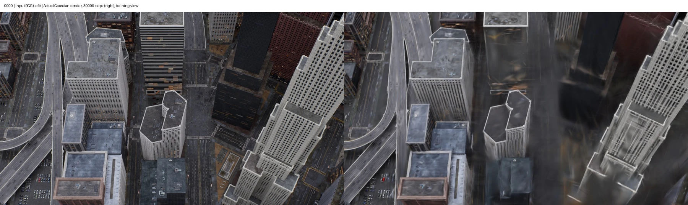
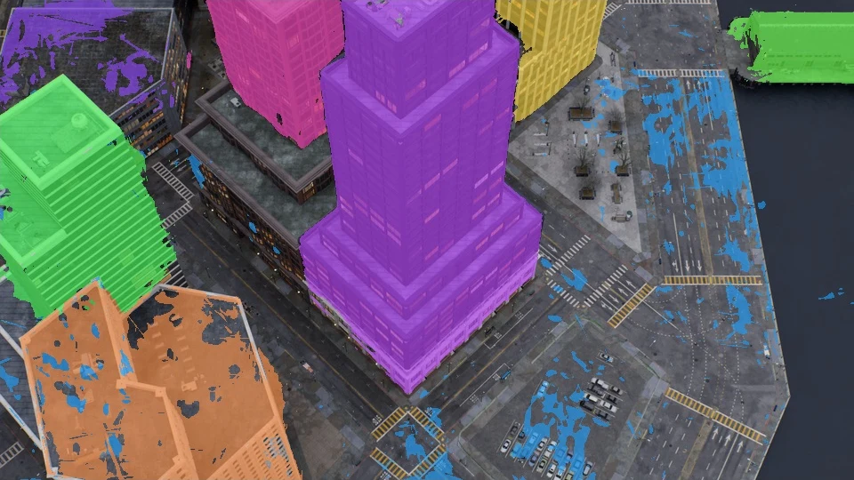
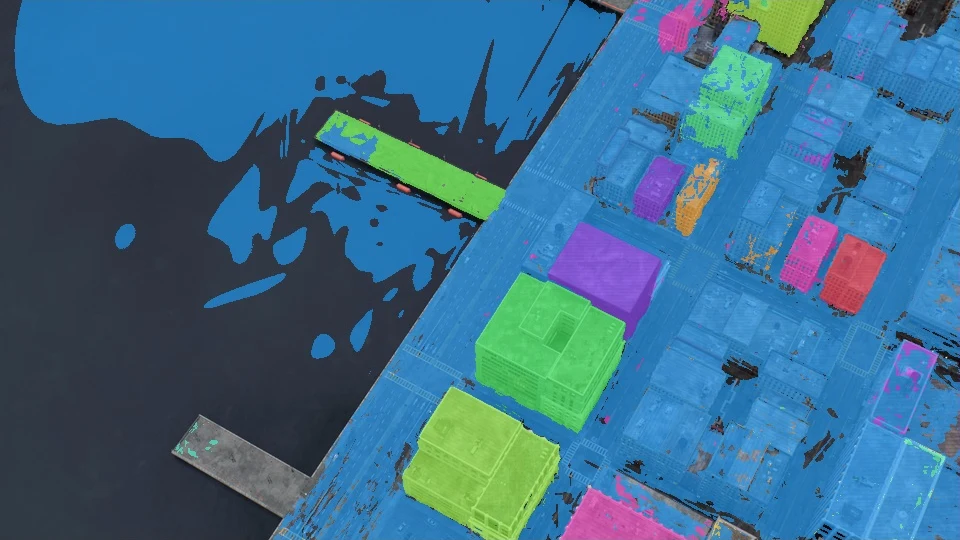
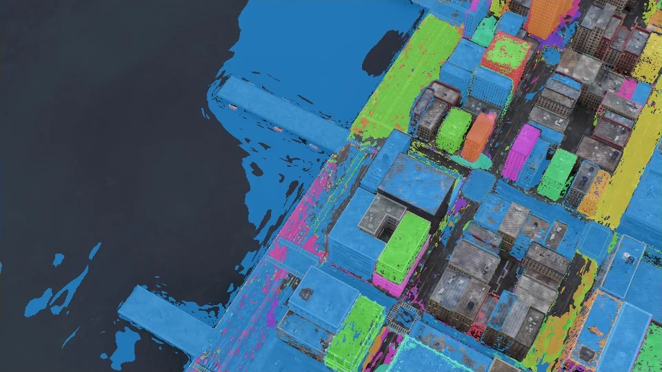
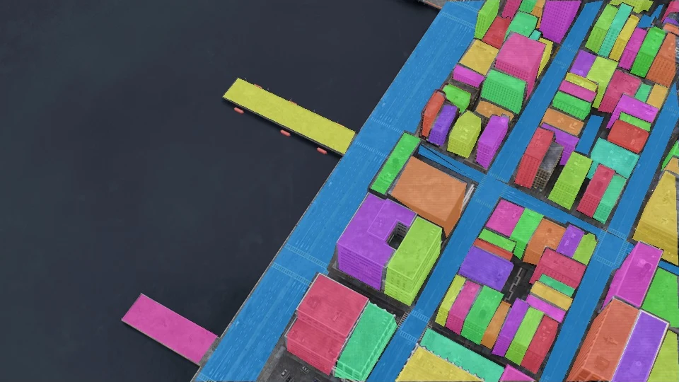

共享场景几何
多视角 RGB 与相机位姿
CityGaussian 场景重建
◈ ◇ ◈
同场景复用几何从城市多视角影像，到实例感知的高斯场景与语义风险导航
研究项目主页 · 论文撰写中 · 暂用描述性标题
左、中为 Block3 同一视角的真实输入与模型预测；右为 Block4 的独立导航实验。实例颜色仅用于区分编号。
城市航拍中，小建筑的漏检、密集建筑的分裂与合并，会随着二维监督传播到三维场景。我们将全图检测与局部检测协同，在共享高斯几何上学习实例身份，再把实例语义接入风险场和路径规划。
在 MatrixCity 的三个区域中，局部补充均提高了建筑 IoU 与建筑 PQ；道路识别的收益随场景变化。我们同时公开 GaGa、Trace3D 适配对比、OpenCLIP 分支和失败案例，让改进的作用与边界都可被检查。
评价视角的 RGB 参与场景学习，属于已见／开发视角，不是独立测试集。人工标注不进入训练损失。
改进发生在实例监督的构建阶段，沿用已有高斯身份学习机制。
多视角 RGB 与相机位姿
CityGaussian 场景重建
内部边界过滤 · 类别级 NMS
整图 SAM → 融合实例掩码
跨视角掩码关联
二维身份损失＋三维邻域正则
前端类别 / 多视角 OpenCLIP
体素语义代价 → 约束 A*
检测融合
类别级框 NMS 阈值为 0.5。全图与局部候选共同参与融合；局部分支不单独运行 SAM。实际监督也可能改变道路掩码。
容量控制
Block2/3/4 的全图与局部主实验分别使用 512/256/2048 标签容量，同场景保持一致。容量不是真实建筑数。
OpenCLIP 分支
ViT-B/32，温度 0.07，每个实例至多 3 个有效视角，面积门槛 128 像素。固定提示词与融合规则，不用 GT 调节。
重建与训练
主要实验使用单张 RTX 4090 24GB。Block4 使用 VGGT 深度初始化的独立几何，未借用其他 block 的场景。

拖动分界线，或展开全部方法。48 个固定标注视角全部可查，不按分数筛选。

全图方法本文方法这是实际训练模型的实例投影叠加在输入 RGB 上；不是二维前端掩码。语义面板只给建筑／道路着色，Trace3D 原始面板显示全部非零 ID，彩色不代表已识别为建筑。全部采用 seed0；训练步数与几何协议见下表。
三个场景的建筑指标均改善，道路收益并不一致。表内保留全部结果。
| 方法 | 建筑 IoU ↑ | 道路 IoU ↑ | 建筑 PQ ↑ | 训练与统计 |
|---|
IoU 为像素 micro-IoU；PQ 为建筑实例 PQ@0.5。主实验 3 种子行显示均值；GaGa、Trace3D 为单种子。Trace3D 采用原生 2D Gaussian、自动原型提取适配及 OpenCLIP，并非官方 GT 查询评价。
Block4 在相同几何、容量与训练配置下，联合融合的 PQ 高于仅追加候选；仅局部检测不能替代全图分支。
| Block4 配置 | 建筑 IoU | 道路 IoU | PQ |
|---|---|---|---|
| 仅全图 | 70.87 | 21.00 | 23.03 |
| 仅局部 | 26.39 | 1.19 | 14.97 |
| 全图＋局部追加 | 74.36 | 23.84 | 23.99 |
| 联合融合 | 74.90 | 24.17 | 25.25 |
均为 30k、3 种子均值。关闭边界过滤的三维配置因容量不足未完成，不填入精度表。
保持三维实例不变，只替换语义赋值后，三个场景的建筑 IoU 均下降。Block3 从 82.71% 降为 68.95%，道路 IoU 从 43.26% 降为 13.66%。
Block3 建筑 IoU，比例尺 0–100%。这是固定提示、视角选择与概率融合配置下的配对结果，不代表所有 OpenCLIP 用法。
Block4 · 0328：低矮密集屋顶中的两种不同错误。



建筑像素被正确识别，不等于整栋建筑被分成一个正确实例。Trace3D 的自动提取结果中存在大量未匹配预测，这会拉低 RQ 和 PQ。这一现象涉及自动提取适配，不能直接归因于原论文方法。